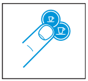
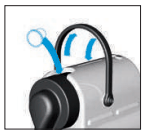
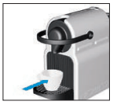
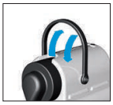

Coffee machine
Preparation
- Rinse the water tank and fill it with drinking water.
- Turn the machine on by pressing the Espresso or Lungo button.

- The lights blink while it heats up (about 25 seconds) and stay steady when the machine is ready.
Making coffee
- Lift the lever and insert a Nespresso capsule.

- Close the lever completely and place a cup under the spout.

- Press Espresso (40 ml) or Lungo (110 ml).
- The coffee is dispensed automatically. Press the same button again to stop early or to add more.
Removing the capsule
- Lift and close the lever: the used capsule drops into the capsule container.

Safety
- Do not lift the lever while coffee is being dispensed.
- Do not put your fingers under the spout or into the capsule compartment.
- Use only drinking water and do not leave water in the tank for more than two days.
- Turn the machine off by pressing Espresso and Lungo together.
If you have any problem, contact the host, Alessandro.
Macchina del caffè
Preparazione
- Sciacqua il serbatoio e riempilo con acqua potabile.
- Accendi la macchina premendo il pulsante Espresso o Lungo.
- Le luci lampeggiano durante il riscaldamento (circa 25 secondi) e restano fisse quando la macchina è pronta.
Fare il caffè
- Solleva la leva e inserisci una capsula Nespresso.
- Chiudi bene la leva e metti una tazzina sotto l'erogatore.
- Premi Espresso (40 ml) o Lungo (110 ml).
- Il caffè esce da solo. Premi di nuovo lo stesso pulsante per fermarlo prima o per allungarlo.
Togliere la capsula
- Solleva e richiudi la leva: la capsula usata cade nel contenitore delle capsule.
Sicurezza
- Non sollevare la leva mentre esce il caffè.
- Non mettere le dita sotto l'erogatore o nel vano delle capsule.
- Usa solo acqua potabile e non lasciare acqua nel serbatoio per più di due giorni.
- Spegni la macchina premendo insieme Espresso e Lungo.
Se riscontri problemi, contatta l’host, Alessandro.
Cafetera
Preparación
- Enjuaga el depósito y llénalo con agua potable.
- Enciende la máquina pulsando el botón Espresso o Lungo.
- Las luces parpadean mientras se calienta (unos 25 segundos) y se quedan fijas cuando la máquina está lista.
Hacer el café
- Levanta la palanca e introduce una cápsula Nespresso.
- Cierra bien la palanca y coloca una taza bajo la salida del café.
- Pulsa Espresso (40 ml) o Lungo (110 ml).
- El café sale solo. Vuelve a pulsar el mismo botón para pararlo antes o para alargarlo.
Retirar la cápsula
- Levanta y cierra la palanca: la cápsula usada cae en el recipiente de cápsulas.
Seguridad
- No levantes la palanca mientras sale el café.
- No metas los dedos bajo la salida del café ni en el compartimento de las cápsulas.
- Usa solo agua potable y no dejes agua en el depósito más de dos días.
- Apaga la máquina pulsando a la vez Espresso y Lungo.
Si tienes algún problema, contacta con el anfitrión, Alessandro.
Machine à café
Préparation
- Rincez le réservoir et remplissez-le d’eau potable.
- Allumez la machine en appuyant sur le bouton Espresso ou Lungo.
- Les voyants clignotent pendant le préchauffage (environ 25 secondes) et restent fixes quand la machine est prête.
Faire le café
- Soulevez le levier et insérez une capsule Nespresso.
- Refermez bien le levier et placez une tasse sous la sortie café.
- Appuyez sur Espresso (40 ml) ou Lungo (110 ml).
- Le café coule tout seul. Appuyez à nouveau sur le même bouton pour l’arrêter avant ou pour l’allonger.
Retirer la capsule
- Soulevez puis refermez le levier : la capsule usagée tombe dans le bac à capsules.
Sécurité
- Ne soulevez pas le levier pendant que le café coule.
- Ne mettez pas les doigts sous la sortie café ni dans le compartiment à capsules.
- Utilisez uniquement de l’eau potable et ne laissez pas d’eau dans le réservoir plus de deux jours.
- Éteignez la machine en appuyant en même temps sur Espresso et Lungo.
En cas de problème, contactez l’hôte, Alessandro.